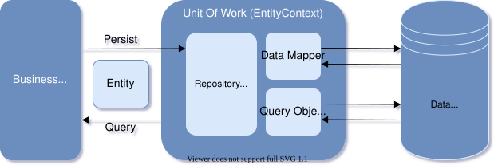

Overview
Entity ORM (Object relational Mapping) is a system that offers an automated mechanism to developers for accessing and storing the data in the database, in object-oriented way by performing the work required to map between Entities defined in an application's programming language as classes and data stored in relational datasources as tables, without need the data-access code to be written.
EntityContext: is the most important class of Entity ORM it implements the Unite of work pattern and represents a session with a database and provides an API for communicating with the database with the following capabilities:
- Database Connections
- Data querying and persistance
- Change Tracking
- Model building
- Data Mapping
- Transaction management
EntitySet: is an implementation of the Repository pattern, represents a collection of classes for a given entity within the model and is the gateway to database operations against an entity, these classes are mapped by default to database tables that take the name of the DbSet property EntitySet classes are.
Entity: is a class that maps to a database table. This class must be included as a EntitySet type property in the EntityContext class. by default Entity ORM maps each entity to a table and each property of an entity to a column in the database.

Installation
Entity ORM package is not a part of DevNet Installer, so you need to install it separetly, and will not work without Database Provider, so you have to chose which database provider you want to use (Mysql, Sqlite, ...) and by installing database provider for Entity ORM, it will automatically install Entity ORM core library package by requirement.
For example if you want to use Entity ORM with Mysql database, you have to install the following pakcage:
composer require devnet/entity-mysql
Note: You can install Entity ORM globaly by adding the argument
global
Database Providers
The following table is a list of the database provider packages disponible for Entity ORM:
| Provider | Package | Repository |
|---|---|---|
| Mysql | devnet/entity-mysql |
packagist.org/packages/devnet/entity-mysql |
| Postgres | devnet/entity-postgresql |
packagist.org/packages/devnet/entity-postgresql |
| Sqlite | devnet/entity-sqlite |
packagist.org/packages/devnet/entity-sqlite |
Defining EntityContext
The recommended way to work with context is to define a context class in "Models" folder that derives from EntityContext and exposes EntitySet properties that represent collections of the specified entities in the context, as shown in the following example.
<?php
namespace Application\Models;
use Artister\Entity\EntityContext;
use Artister\Entity\EntitySet;
use Artister\Entity\EntityOptions;
class EntityManager extends EntityContext
{
private EntitySet $Authors;
public function __construct(EntityOptions $options)
{
parent::__construct($options);
this->Authors = $this->set(Author::class);
}
public function __get(string $name)
{
return $this->$name;
}
}
Registing EntityContext
To use Entity ORM in our application we need to register and configure EntityContext as a service in configureServices method of Startup class using the Extension method addEntityContext as shown in following example code:
<?php
namespace Application;
use Artister\System\Dependency\IServiceCollection;
use Artister\Web\Dispatcher\IApplicationBuilder;
use Artister\Web\Extensions\ServiceCollectionExtensions;
use Artister\Web\Extensions\ApplicationBuilderExtensions;
use Artister\Entity\Mysql\MysqlEntityOptionsExtension;
use Application\Models\EntityManager;
class Startup
{
public function configureServices(IServiceCollection $services)
{
$services->addEntityContext(EntityManager::class, function($options)
{
$options->useMysql("//username:password@127.0.0.1/database");
});
}
...
}
EntityOptions Extensions
EntityOptions can extends extension methods by declaring the extension class using the keyword use, like in the example above:
use Artister\Entity\Mysql\MysqlEntityOptionsExtension;
The method useMysql(string $connection) used by EntityOptions class, actually belong to MysqlEntityOptionsExtension class.
The following table is a list of EntityOptions Extensions with their extention method for each database provider:
| Provider | Extension Class | Extension Method |
|---|---|---|
| Mysql | Artister\Entity\Mysql\MysqlEntityOptionsExtension |
useMysql(string $connection) |
| Postgres | Artister\Entity\Postgresql\PostgresqlEntityOptionsExtension |
usePgsql(string $connection) |
| Sqlite | Artister\Entity\Sqlite\SqliteEntityOptionsExtension |
useSqlite(string $connection) |
Connection String
The connection string used by the database providers follows the following url format:
"//[username]:[password]@[host]:[port]/[database]?[option=value]"
| Provider | Connection String |
|---|---|
| Mysql | "//username:password@127.0.0.1:3306/database" |
| Postgres | "//username:password@127.0.0.1:5432/database" |
| Sqlite | "//memory" or "path/to/database" |
Note: If you want to use the default port value you can just skip it like this:
"//username:password@127.0.0.1/database"